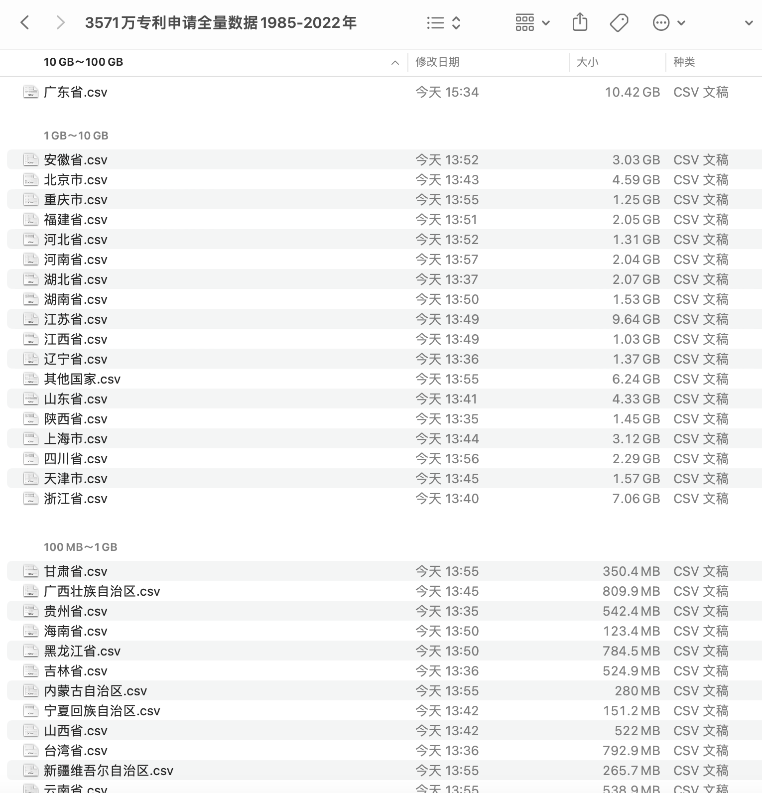
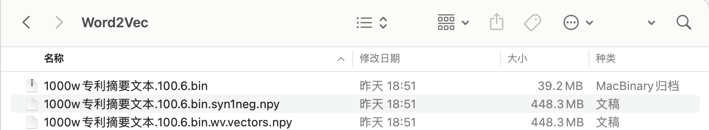
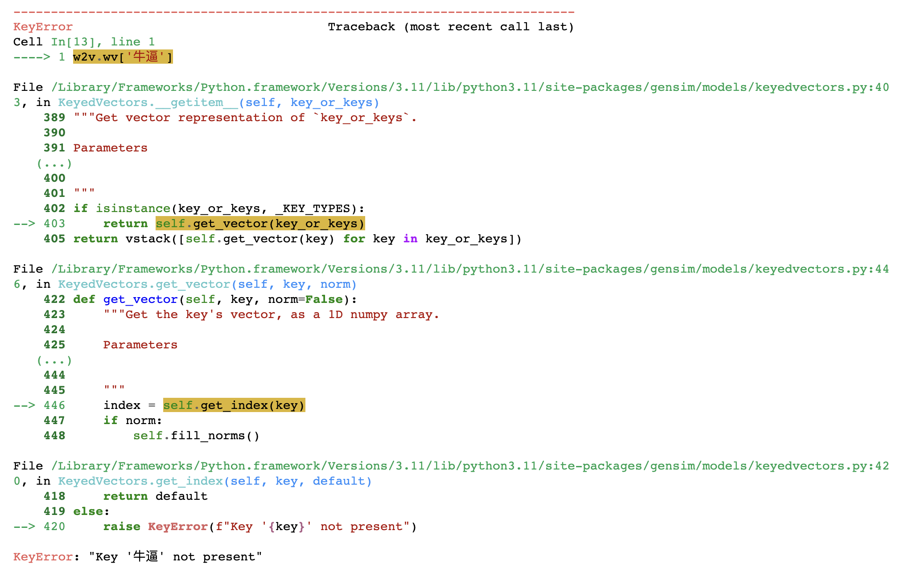
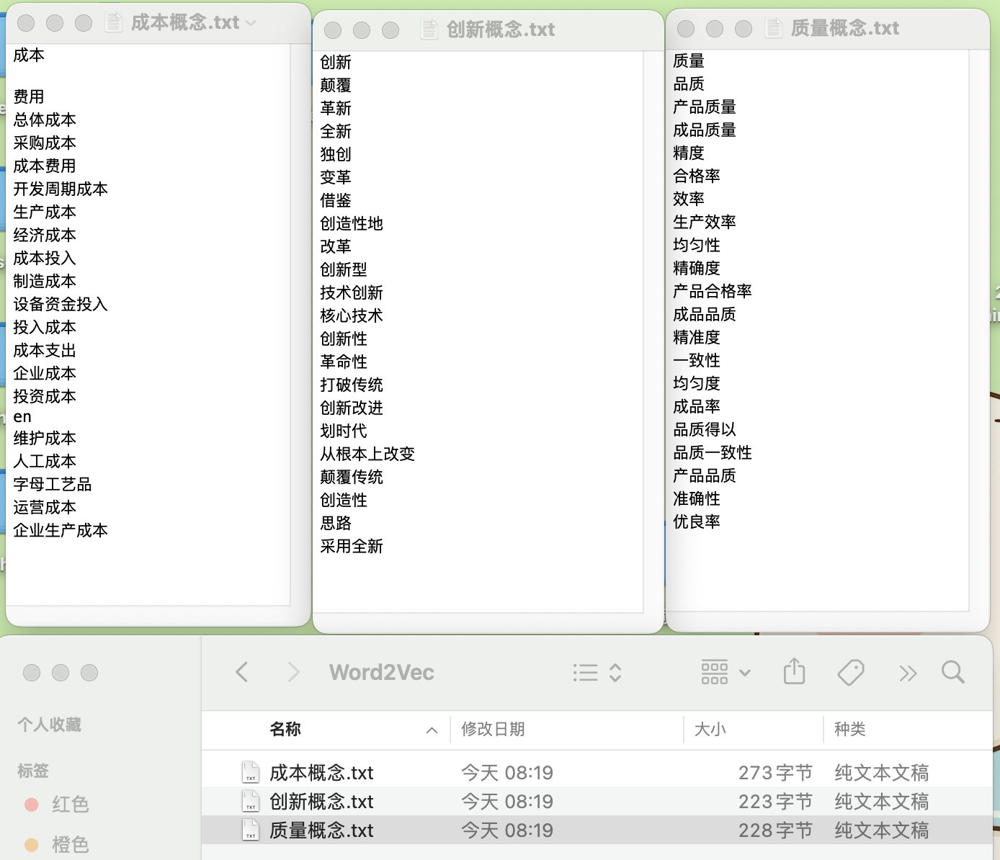

一、说明
5112万条专利申请数据集(1985-2025年) 中随机抽取了20%的 「专利摘要」，构成6.14G的训练语料(千万级别)， 耗时6小时，训练得到word2vec模型。
需要注意， 100%全部语料有24G， 使用服务区内存128G，跑了20小时预处理还没完成，内存就炸了。
没办法，我不会优化代码性能，所以只能抽取20%的文本数据来训练word2vec
本文需要用到新cntext，因为bug较多， 直接上传到PyPi，将导致之前制作的课程和公众号推文相关内容全部重新一遍。
一、语料构建
随机抽取20%的记录，构成千万专利文本摘要训练语料。
为了防止电脑内存爆炸， 对任意单个大csv文件，分批次读取，每次读10w行。最终将专利摘要文本保存到txt文件中，编码方式为utf-8。
如果想开发一些词典，可以跳过此部分内容，并不影响代码运行。

#将代码放在csv数据文件夹内
import os
import pandas as pd
with open('1000w专利摘要文本.txt', 'w', encoding='utf-8') as txtf:
#获得当前文件夹内所有的csv文件路径
csvfs = [f for f in os.listdir('.') if '.csv' in f]
for csvf in csvfs:
#分批次读取csv，每次读10w行
chunk_dfs = pd.read_csv(csvf,
usecols = ['摘要文本'],
chunksize=100000)
for chunk_df in chunk_dfs:
#剔除专利摘要为空的记录
chunk_df.dropna(inplace=True, subset=['摘要文本'])
#随机抽取28%的记录
sample_df = chunk_df.sample(frac=0.2)
txtf.write(''.join(sample_df['摘要文本'].tolist()))
最终得到的 1000w专利摘要文本.txt 文件有 6.14G
二、训练word2vec
我使用的自己 未公开 的cntext 2.1.4 版本， Bug频出，等调整好了再公开。
2.1 安装
将 cntext-2.1.4-py3-none-any.whl 放置于桌面，打开 cmd (苹果电脑打开terminal)， 输入cd desktop
cd desktop
之后在 cmd (苹果电脑打开terminal) 中使用 pip3 安装
pip3 install cntext-2.1.4-py3-none-any.whl
文末有 cntext-2.1.4-py3-none-any.whl 获取方式
Word2Vec模型参数
- window = 6
- vector_size = 100
#cntext为2.1.4
import cntext as ct
w2v_model = ct.W2VModel(corpus_file='1000w专利摘要文本.txt',
lang='chinese')
w2v_model.train(vector_size=100, window_size=6)
Run
Starting Preprocessing Corpus ...
Starting Training! This may take a while.Please be patient...
Traning word2vec model took 22806 seconds
Note: The Word2Vec model hase saved to output/Word2Vec

cntext.W2VModel训练中考虑到了词组情况，为了将"科学技术"这类短语词(词组)也纳入到word2vec训练中， 使用到gensim.models.phrases.Phrase。
大邓不会优化性能，训练word2vec时，预处理部分占用内存很大， 我用的服务器内存128G， 训练时间6.335小时。
三、使用词向量
3.1 录入模型
需要注意， 专利模型文件是三个哦， 三个是一个整体，不要随意删除
#2.1.4 版本cntext，未公开
import cntext as ct
from gensim.models import KeyedVectors
w2v = ct.load_w2v('Word2Vec/1000w专利摘要文本.100.6.bin')
#如果没有cntext就用注释掉的代码，使用gensim导入
#w2v = KeyedVectors.load('Word2Vec/1000w专利摘要文本.100.6.bin')
w2v
Run
Loading word2vec model...
<gensim.models.word2vec.Word2Vec at 0x2afb3f650>
3.2 词汇量
查看模型中的词汇量
#模型中词汇量
len(w2v.wv)
Run
1120752
3.3 查看词向量
查看任意词的词向量，例如“创新”
#查看 ”创新” 的词向量
w2v.wv['创新']
Run
array([-2.3267136 , 2.3038454 , 2.8232517 , -3.23959 , -2.9036384 ,
-2.0450666 , -1.5516403 , 0.00575857, -0.64638597, 1.3585284 ,
-1.7491045 , -1.3659543 , 1.9901325 , -1.5066692 , 0.5094756 ,
-1.7032526 , -0.35252815, -4.00833 , 3.5424068 , -0.0426405 ,
-0.24548595, -0.7675196 , 2.366155 , -0.18583044, 0.83989865,
1.5965563 , 0.30173486, -0.80054444, 2.0068777 , 1.770656 ,
0.06608703, -2.5833828 , 1.7995895 , -0.281671 , 0.06354411,
1.2502885 , 1.1960976 , -0.19735877, -2.3988242 , 1.0004953 ,
0.950612 , -2.9186552 , 2.5141885 , 0.5993077 , 1.2969743 ,
-3.7506597 , 2.6031113 , -0.30022916, -1.0615158 , -0.2402753 ,
-0.29447314, -1.7101966 , -2.6812305 , 1.1898949 , -0.34348696,
-1.7013234 , 0.27328706, -0.67401695, -2.8010712 , -1.5993378 ,
0.55218667, -0.15136468, 0.67049694, 0.6745255 , -0.80350083,
2.254024 , -0.8005472 , -2.0170422 , 2.882873 , -0.46188217,
0.8481421 , -1.3741239 , 0.7432127 , 1.1100464 , -0.64173746,
-1.3264686 , -1.991515 , -0.27887765, -0.62801987, -3.0960062 ,
-3.2658167 , -0.065689 , 2.5853407 , -1.6554247 , -0.49887556,
-2.146973 , -0.45912525, 0.28037554, 1.0885888 , 1.6503012 ,
1.0013059 , 0.3194557 , 3.0309706 , -4.5257196 , 0.4644844 ,
3.0723457 , 0.49002075, 2.4370434 , -0.7763012 , 3.2541463 ],
dtype=float32)
注意: 如果查询的词未在模型中，会出现KeyError报错。
w2v.wv['牛逼']

3.4 最相似词
与’创新', ‘颠覆’最相似的20个词
#词语列表中可传入任意多个词，
#大邓词穷，只想到这两个相似的种子词
w2v.wv.most_similar(['创新', '颠覆'], topn=20)
Run
[('革新', 0.8313461542129517),
('变革', 0.8260877728462219),
('革命性', 0.79015052318573),
('从根本上改变', 0.7867545485496521),
('改革', 0.7788680791854858),
('技术创新', 0.7715167999267578),
('核心技术', 0.7679213881492615),
('独创', 0.7668667435646057),
('创新型', 0.7655373811721802),
('颠覆性', 0.7575560212135315),
('借鉴', 0.7570509910583496),
('全新', 0.7496902942657471),
('有别于', 0.7489079236984253),
('打破常规', 0.7397119402885437),
('改变目前', 0.735921323299408),
('打破传统', 0.7265862226486206),
('大胆', 0.7247217893600464),
('加以改进', 0.7223487496376038),
('划时代', 0.7221404910087585),
('改变过去', 0.7220492959022522)]
刚刚的运行，体现模型很好的学习到了专利摘要中的语义关系。
如果我想开发三个词典，分别是 创新、成本、质量 ，想直接将结果保存到txt中，可以运行如下代码
seeds = {'创新概念': ['创新', '颠覆'],
'成本概念': ['成本', ''],
'质量概念': ['质量']}
ct.expand_dictionary(wv=w2v.wv, #word2vec词向量
seeddict=seeds, #种子词字典
topn=20) #保留20个最相似的词
Run
Finish! 创新概念 candidates saved to output/Word2Vec
Finish! 成本概念 candidates saved to output/Word2Vec
Finish! 质量概念 candidates saved to output/Word2Vec

四、获取资源
内容整理不易， 如果对本文感兴趣，可加微信 372335839， 备注「姓名-学校-专业」
- 100元 cntext-2.1.4-py3-none-any.whl
- 100元 word2vec模型文件
- 200元 获得
- cntext-2.1.4-py3-none-any.whl
- Word2Vec模型文件
声明: 仅用于科研用途